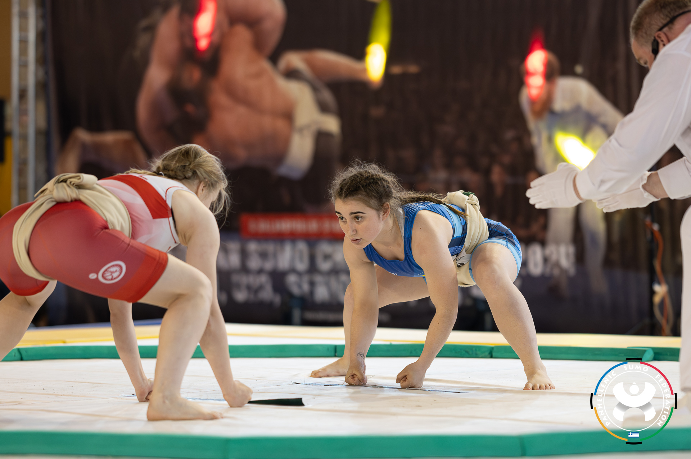

Το Τατάμι και η Διαμόρφωση του Χαρακτήρα
Η εξάσκηση στις παραδοσιακές πολεμικές τέχνες έχει ένα ιδιαίτερο χαρακτηριστικό: δεν γυμνάζει μόνο το σώμα. Δημιουργεί χαρακτήρα. Αυτό είναι ένα στοιχείο που ξεχωρίζει τις πολεμικές τέχνες από τα αθλήματα.
Στο τατάμι, ο άνθρωπος έρχεται αντιμέτωπος με κάτι που δύσκολα μπορεί να αποφύγει στην καθημερινή του ζωή: τον ίδιο του τον εαυτό. Εκεί οι πραγματικές του δυνατότητες, αλλά και οι αδυναμίες του, αποκαλύπτονται πολύ γρήγορα. Λανθασμένες αντιλήψεις που μπορεί να είχε για τη δύναμή του, την αντοχή του, την αυτοπεποίθησή του ή την ικανότητά του να ανταποκρίνεται σε δύσκολες καταστάσεις, μπορούν μέσα σε λίγα λεπτά να καταρρεύσουν. Με αυτή την έννοια, η εξάσκηση στο budo είναι μια μορφή έκθεσης.
Ο αρχάριος που μπαίνει για πρώτη φορά σε ένα dojo φορώντας το dogi αισθάνεται συχνά άβολα. Το ίδιο το ένδυμα είναι διαφορετικό από οτιδήποτε έχει συνηθίσει. Γύρω του υπάρχουν άνθρωποι που γνωρίζουν περισσότερα, κινούνται με μεγαλύτερη άνεση και φαίνεται να ξέρουν ακριβώς τι κάνουν. Ο ίδιος δεν γνωρίζει ακόμη ούτε πώς να σταθεί σωστά ούτε πότε να κάνει υπόκλιση ούτε πώς να στοιχιθεί.
Και τότε αρχίζει η πραγματική δοκιμασία. Έρχεται η πρώτη πτώση. Η πρώτη επαφή. Το πρώτο χτύπημα. Το πρώτο κλείδωμα. Η πρώτη στιγμή που θα αισθανθεί ότι δεν μπορεί να εκτελέσει μια τεχνική. Η πρώτη φορά που κάποιος άλλος θα τον κάνει να χάσει την ισορροπία του. Εκεί υπάρχει μια επιλογή. Μπορεί να φύγει ή μπορεί να μείνει. Μπορεί να αποφασίσει ότι αυτό δεν είναι για εκείνον, ότι δυσκολεύεται, ότι νιώθει άβολα, ότι φοβάται ή ότι δεν είναι αρκετά ικανός. Μπορεί όμως και να επιλέξει να επιμείνει. Να αποδεχτεί τη δυσκολία και να δουλέψει πάνω σε αυτό που τον κάνει να αισθάνεται παράξενα. Εκεί ακριβώς αρχίζει να διαμορφώνεται ο χαρακτήρας.
Το τατάμι έχει έναν ιδιαίτερο τρόπο να αποκαλύπτει και τον εγωισμό μας. Δεν έχει ιδιαίτερη σημασία τι πιστεύουμε ότι μπορούμε να κάνουμε. Σημασία έχει τι μπορούμε πράγματι να κάνουμε. Και όταν ανακαλύψουμε ότι δεν μπορούμε ακόμη, δεν έχουμε αποτύχει. Απλώς έχουμε βρει το σημείο από το οποίο πρέπει να ξεκινήσουμε.
Ο μαθητής, ακολουθώντας τις οδηγίες του δασκάλου, αρχίζει σταδιακά να δουλεύει τις αδυναμίες του. Μαθαίνει να πέφτει χωρίς φόβο. Μαθαίνει να δέχεται την επαφή. Μαθαίνει να ελέγχει το σώμα του, την αναπνοή του και τις αντιδράσεις του. Μαθαίνει να συνεχίζει ακόμη και όταν κουράζεται. Και κάποια στιγμή αντιλαμβάνεται ότι κάτι έχει αλλάξει. Όχι μόνο στην τεχνική του. Στον ίδιο.
Αυτό το στάδιο δεν το βιώνει μόνο μία φορά. Επιστρέφει ξανά και ξανά κατά τη διάρκεια της πορείας του. Στις εξετάσεις για την επόμενη ζώνη. Σε μια επίσκεψη σε άλλη σχολή. Σε ένα σεμινάριο. Σε μια προπόνηση με πιο έμπειρους ασκούμενους. Και, φυσικά, σε έναν αγώνα. Κάθε φορά εμφανίζεται μπροστά του ένα καινούργιο εμπόδιο και κάθε φορά υπάρχει η ίδια επιλογή: θα κάνει πίσω ή θα προχωρήσει;
Η αποτυχία είναι μέρος αυτής της διαδικασίας. Ο μαθητής μπορεί να μην περάσει μια εξέταση. Μπορεί να χάσει έναν αγώνα. Μπορεί να μην καταφέρει μια τεχνική που πίστευε ότι θα εκτελούσε εύκολα. Μπορεί να βρεθεί απέναντι σε κάποιον καλύτερο από εκείνον. Το σημαντικό δεν είναι να μην αποτύχει. Το σημαντικό είναι να μάθει τι θα κάνει μετά την αποτυχία. Θα θυμώσει; Θα απογοητευτεί; Θα εγκαταλείψει; Ή θα επιστρέψει στην επόμενη προπόνηση και θα προσπαθήσει ξανά; Εκεί βρίσκεται ένα από τα μεγαλύτερα μαθήματα των πολεμικών τεχνών.
Με τον χρόνο, οι εμπειρίες αυτές αρχίζουν να μεταφέρονται έξω από το dojo. Η πειθαρχία, η συνέπεια, η στοχοπροσήλωση, ο σεβασμός, η συνεργατικότητα και η αυτογνωσία παύουν να είναι απλώς στοιχεία μιας προπόνησης. Γίνονται τρόπος συμπεριφοράς. Ο μαθητής μαθαίνει να διαχειρίζεται την ήττα χωρίς να διαλύεται και τη νίκη χωρίς να παρασύρεται. Μαθαίνει ότι ο αντίπαλος δεν είναι απαραίτητα εχθρός. Είναι ο άνθρωπος που του δίνει την ευκαιρία να δοκιμάσει τον εαυτό του. Και ίσως αυτό είναι ένα από τα σημαντικότερα μαθήματα που μπορεί να προσφέρει μια πολεμική τέχνη. Ο άλλος άνθρωπος δεν βρίσκεται απέναντί σου μόνο για να σε νικήσει. Βρίσκεται εκεί για να σε βοηθήσει να ανακαλύψεις τι μπορείς να γίνεις.
Στα παιδιά αυτή η διαδικασία έχει ακόμη μεγαλύτερη σημασία. Ένα παιδί που φοβάται να πέσει μαθαίνει να πέφτει. Ένα παιδί που φοβάται την επαφή μαθαίνει να τη διαχειρίζεται. Ένα παιδί που δυσκολεύεται να χάσει μαθαίνει ότι η ήττα δεν είναι λόγος να εγκαταλείψει. Ένα παιδί που ντρέπεται να δοκιμάσει μαθαίνει να εκτίθεται, να κάνει λάθος και να ξαναπροσπαθεί. Και όλα αυτά μπορούν να συμβούν μέσα από το παιχνίδι, την κίνηση και την προπόνηση, χωρίς το παιδί να αντιλαμβάνεται εξαρχής ότι στην πραγματικότητα εκπαιδεύει και τον χαρακτήρα του.
Ο ρόλος του δασκάλου σε αυτή τη διαδικασία είναι καθοριστικός. Ο δάσκαλος δεν βρίσκεται εκεί απλώς για να δείξει μια τεχνική. Βρίσκεται για να βοηθήσει τον μαθητή να αντιμετωπίσει τον εαυτό του. Δεν χρειάζονται όλοι οι μαθητές το ίδιο πράγμα. Κάποιος χρειάζεται περισσότερη ενθάρρυνση. Κάποιος άλλος χρειάζεται περισσότερα όρια. Κάποιος πρέπει να πιεστεί λίγο περισσότερο για να ξεπεράσει τον φόβο του και κάποιος άλλος χρειάζεται χρόνο μέχρι να βρει το θάρρος του. Ο σωστός δάσκαλος δεν χαϊδεύει πάντοτε τον μαθητή, αλλά ούτε και τον συντρίβει. Τον οδηγεί μέχρι το σημείο όπου μπορεί να προχωρήσει μόνος του.
Υπάρχει μια παλιά διδασκαλία των κινεζικών πολεμικών τεχνών που λέει ότι ο κάθε μαθητής έχει τον δάσκαλο που του αξίζει. Ίσως αυτή η φράση να μην πρέπει να ερμηνεύεται κυριολεκτικά. Θα μπορούσε όμως να σημαίνει κάτι βαθύτερο: ο δάσκαλος και ο μαθητής διαμορφώνουν ο ένας τον άλλον. Ο μαθητής που πραγματικά θέλει να εξελιχθεί αναζητά έναν δάσκαλο που δεν θα του επιβεβαιώνει συνεχώς πόσο καλός είναι, αλλά θα του δείχνει πού και πώς μπορεί να γίνει καλύτερος. Και ο καλός δάσκαλος γνωρίζει ότι ο τελικός του στόχος δεν είναι να κάνει τον μαθητή εξαρτημένο από αυτόν. Είναι να τον κάνει ικανό να σταθεί μόνος του. Γιατί η πραγματική πειθαρχία δεν είναι να κάνεις κάτι επειδή κάποιος σε αναγκάζει. Είναι να συνεχίζεις να το κάνεις όταν κανείς δεν σε κοιτάζει. Η πραγματική δύναμη δεν είναι να μπορείς να νικήσεις κάποιον. Είναι να μπορείς να ελέγξεις τον εαυτό σου. Η πραγματική αυτοπεποίθηση δεν είναι να πιστεύεις ότι δεν έχεις αδυναμίες. Είναι να γνωρίζεις τις αδυναμίες σου και να μην φοβάσαι να τις αντιμετωπίσεις. Και ίσως τελικά αυτός να είναι ο βαθύτερος σκοπός του budo.
Το τατάμι δεν είναι απλώς ένας χώρος όπου μαθαίνουμε να μάχονται το σώμα και η τεχνική. Είναι ένας χώρος όπου μαθαίνουμε να στεκόμαστε ξανά όρθιοι κάθε φορά που πέφτουμε. Η μάχη είναι το μέσο. Οι τεχνικές, τα kata είναι μέσα επίτευξης. Η διαμόρφωση του ανθρώπου είναι ο σκοπός.

Η φωτογραφία δημοσιεύεται με την άδεια της Πανελλήνιας Ομοσπονδίας Σούμο